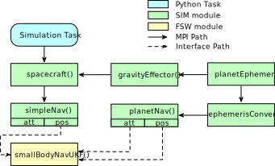
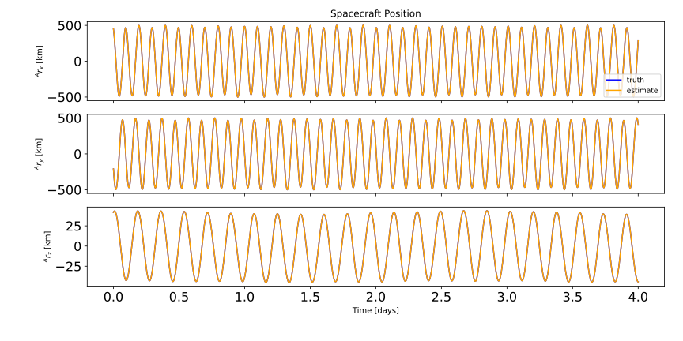
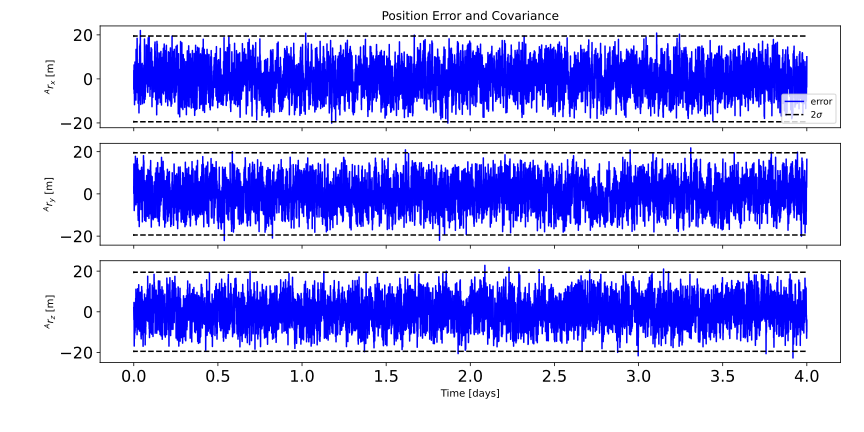
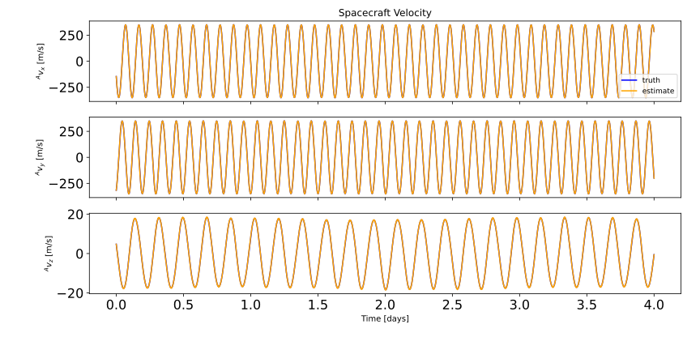
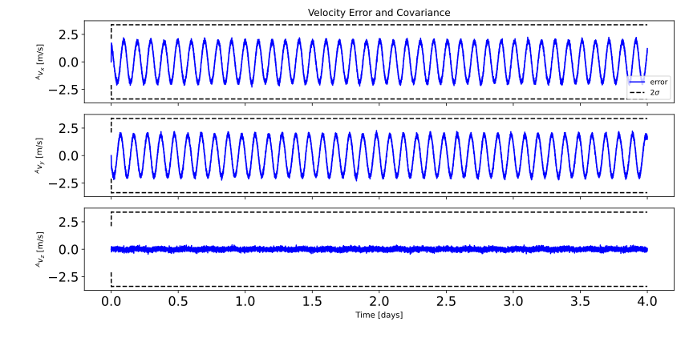
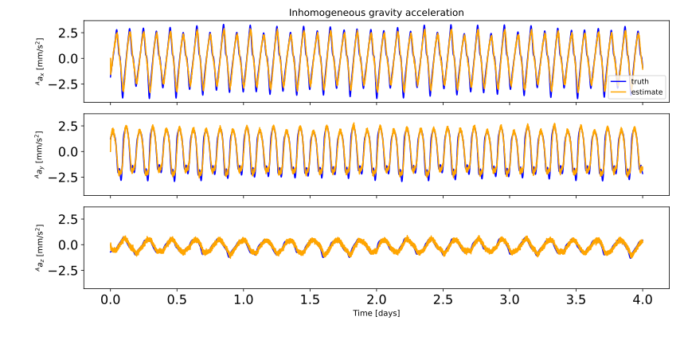
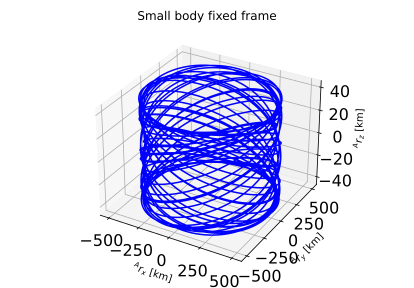
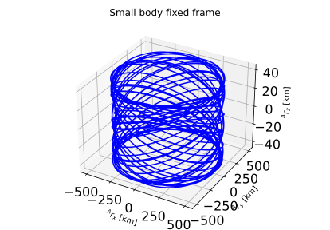

scenarioSmallBodyNavUKF¶
Overview¶
This scenario demonstrates how to use the smallBodyNavUKF() for translational state and non-Keplerian gravity
acceleration estimation about a small body. In this example, Vesta is chosen (supportData/LocalGravData/VESTA20H.txt).
However, any small body could be selected as long as the appropriate gravitational parameter is set.
In this scenario, Module: simpleNav and Module: planetEphemeris provide measurements to the UKF in the form of NavTransMsgPayload and EphemerisMsgPayload input messages. The UKF takes in these measurements at each timestep and updates the state estimate, outputting this state estimate in its own standalone message, a SmallBodyNavUKFMsgPayload.
Note
This module is only meant to demonstrate the possibility of estimating non-Keplerian acceleration in a small body environment. Therefore, realistic measurement modules do not exist to support this module, and not every source of uncertainty in the problem is an estimated parameter.
The relative position estimate and the estimation error and covariance may be found in the plots below.
The relative velocity estimate and the estimation error and covariance may be found in the plots below.
The non-Keplerian acceleration estimate (inhomogeneous gravity field) and the estimation error and covariance may be found in the plots below.

The spacecraft trajectories as seen from the inertial and asteroid fixed frame may be found in the plots below.
 
The script is found in the folder basilisk/examples and executed by using:
python3 scenarioSmallBodyNavUKF.py
Plot the relative position in 3D.
Plot the non-Keplerian acceleration estimation error and associated covariance.
Plot the non-Keplerian acceleration result.
Plot the position estimation error and associated covariance.
Plot the relative position result.
Plot the velocity estimation error and associated covariance.
Plot the relative velocity result.